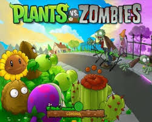

So, let me run you through an... interesting scenario, one day, you move to a new house, before recieving a note that tells you that Zombies are suddenly coming for you, and then an insane neighbour shows up, and offers you seed packets to grow into plants, that end up fighting the Zombies, leading you to constantly defend your house while gaining more and more plants, until you fight the zombie leader who is in a giant mech, and that is barely scratching the surface of the insanity of Plants vs Zombies.
Plants vs Zombies is a defense game all about defending your lawn from hoardes of undead through the use of grown plants, with there being 49 different plants to choose from, each with different costs and capabilities that allow for plenty of different strategies to come up with.
When it comes to locking down your strategies, something to consider is sun, this is the currency that allows you to spawn in your plants, if you don't have enough sun, you can't plant them, luckily, not only does it fall from the sky, there are also plants that can directly produce it, key among them being the Sunflower, though sun shrrom, while initially producing less, is cheaper, meanwhile Twin Sunflower costs more sun, but also produces more.
As for what plants you can produce with the sun, there's a lot, each with different costs and abilities, you've got your baseline damage dealers like the Peashooters, who have several more expensive versions who either deal more damage (like Repeaters), or apply status effects (like fire and ice Peashooters), and they can even be buffed by placing Torchwood's infront of them. Lobber's like Cabbage and MelonPults dish out heavier splash damage at a slower rate, and explosive plants like Cherry Bomb and Jalapeno instantly detonate, destroying nearby Zombies and themselves, and defensive plants like Wall-Nuts to keep the Zombies occupied, there's even some situational plants to consider, like certain water only plants for pool levels, Plantern to deal with fog, and Umbrelleaf to deal with incoming bungee-zombies from above.
There's a lot of fun strategy to mix and match with this game, which is why I really like it, it's simple to get a hang of, while still being able to get your brain active to figure out different solutions, and there's even several mini-games that are just as fun, like vase breaker or Wall-Nut Bowling.
The game's plenty of fun, beyond just the gameplay, the music and art is all great and pretty creative, and there's plenty of constantly changing stuff as you go through levels to keep it from getting repetitive, it's really good.